La vidéo de *Pursuing AI* explore les performances révolutionnaires de **DeepSeek V4 Flash**, un modèle d'IA léger mais extrêmement performant, capable de générer des environnements interactifs complexes, des jeux vidéo complets (GTA 6-style, FPS) et des interfaces web à partir d'un simple prompt textuel. Le créateur analyse minutieusement ce nouveau modèle en le confrontant aux poids lourds du secteur comme **GPT-5.6 Luna** et **Kimi K3**, tout en dévoilant les premiers aperçus prometteurs de **DeepSeek V4 Pro**. L'analyse met en lumière un changement de paradigme majeur dans l'industrie : l'efficacité économique extrême des petits modèles qui talonnent les architectures dix fois plus grandes pour une fraction du coût.
La méthodologie démontrée repose sur une approche itérative via des agents conversationnels et des environnements de développement intégrés (comme l'utilisation de *Hermes Agent*). Le créateur procède par des benchmarks comparatifs rigoureux en soumettant exactement le même prompt à différents modèles pour évaluer le ratio coût-temps-qualité. Pour les créateurs de vidéo et de contenu interactif, ces avancées ouvrent des perspectives inédites : la possibilité de prototyper des univers virtuels interactifs, des décors complexes et des applications web cinématiques en quelques minutes, pour à peine quelques centimes, redéfinissant ainsi les standards de production rapide.
DeepSeq VAC avec son nouveau modèle v4 flash. Aujourd'hui, nous allons voir comment il performe, le comparer avec Kimi K3, l'un des plus forts modèles open source, et jeter également un œil rapide aux premiers résultats de DeepSeq v4 Pro. C'est Pursuing AI et vous regardez le Research Report. En commençant par cette démo de style GTA 6 en un seul coup. Tout ce que vous voyez a été généré entièrement par DeepSeq v4 flash sans actifs externes. Pour un modèle Flash, il fait un travail impressionnant en recréant un environnement de monde ouvert réaliste. Vous pouvez tirer avec des armes, les PNJ réagissent en s'enfuyant, conduire des voitures, frapper
Interface & Outils : Interface de démonstration de moteur de jeu ou de simulation en monde ouvert avec affichage tête haute (HUD) et interface de comparaison côte à côte
Contenu textuel & Code : Textes "V4 FLASH", "5.6 Luna", compteur de score et d'objectifs, inventaire dans le coin supérieur gauche, indicateur de munitions et d'argent dans le coin supérieur droit
Action / Démonstration : Comparaison de performances de modèles d'IA générative jouant à des jeux de plateforme et navigation dans un environnement open-world virtuel en 3D
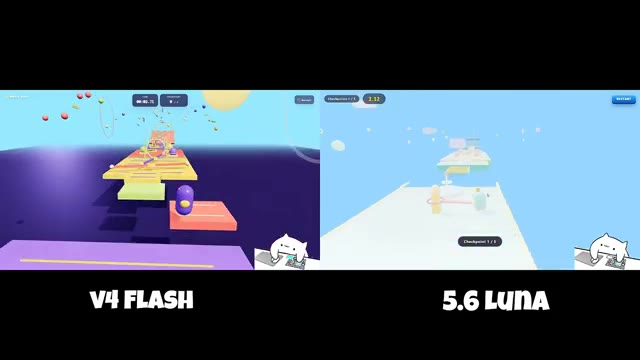
🔍 Agrandir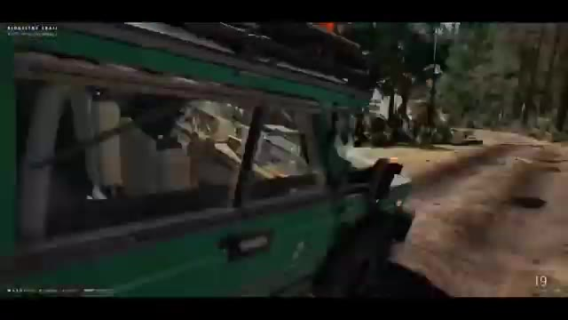
🔍 Agrandir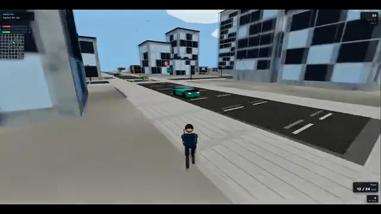
🔍 Agrandir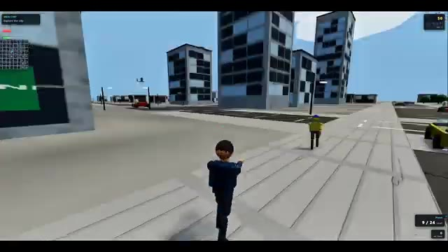
🔍 Agrandirpiétons, et entrent même en collision avec des bâtiments au lieu de les traverser. La physique et les interactions ne sont pas parfaites, mais il est quand même impressionnant de voir un modèle léger générer un jeu interactif de ce type. Vient ensuite cette gare ferroviaire entièrement générée construite avec Three.js. Pour un modèle Flash, la qualité est étonnamment bonne, surtout compte tenu du prix.
Interface & Outils : Interface de jeu vidéo et application web 3D interactive utilisant Three.js.
Contenu textuel & Code : Éléments d'interface de jeu (compteur d'argent en haut à droite, objectif "Explore the city") et étiquette "KINGSWAY STATION - Photorealistic Three.js railway station - PBR - dynamic shadows" avec des boutons de navigation (Overview, Platform, Train, Station, Footbridge).
Action / Démonstration : Navigation interactive dans un jeu de type monde ouvert généré par IA, suivie de la présentation d'une scène 3D de gare ferroviaire.
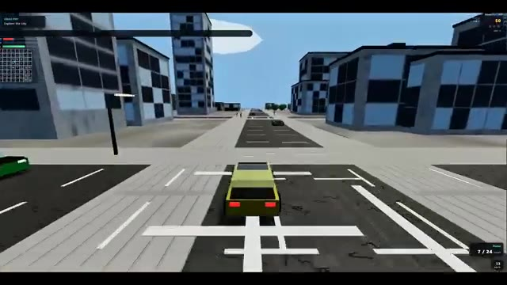
🔍 Agrandir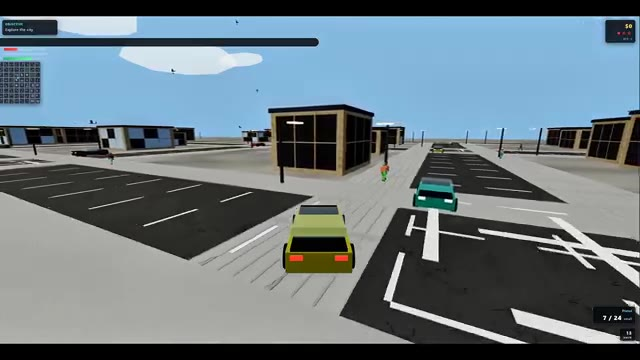
🔍 Agrandir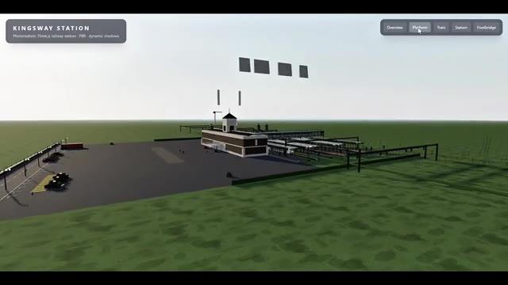
🔍 AgrandirLa scène a l'air propre, la structure est détaillée et la présentation globale est solide. Et rappelez-vous, il s'agit de DeepSeek V4 Flash, pas du modèle Pro. Plus tard dans la vidéo, je vous montrerai également ce dont DeepSeek V4 Pro est capable. Ensuite, voici ce jeu de tir à la première personne (FPS). Et honnêtement, la partie la plus impressionnante n'est pas les graphismes, c'est le coût.
Interface & Outils : Interface de simulation 3D interactive et moteur de jeu vidéo à la première personne (FPS) avec affichage de l'arme et compteur de munitions.
Contenu textuel & Code : Textes visibles : "KINGSWAY STATION", "Photorealistic Three.js railway station - PBR - dynamic shadows", boutons de navigation ("Overview", "Platform", "Train", "Station", "Footbridge"), et sur l'image 3 un chargeur/arme étiqueté "TAC-9 (92mm Ammo)" avec le chiffre "26".
Action / Démonstration : Navigation et exploration d'une scène 3D de gare ferroviaire interactive, puis transition vers une séquence de jeu de tir à la première personne (FPS).
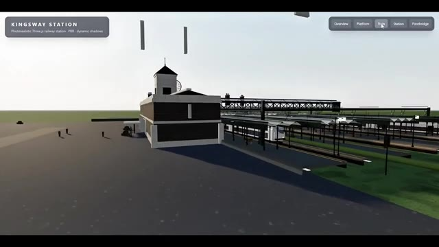
🔍 Agrandir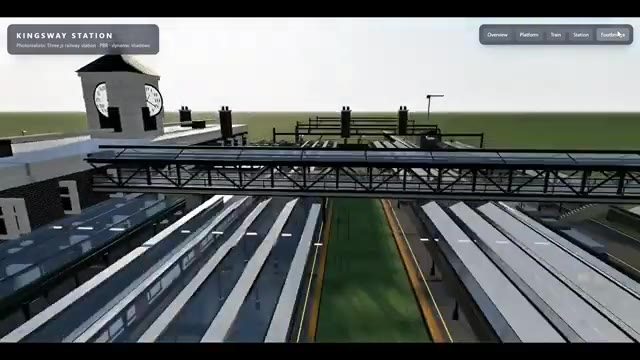
🔍 Agrandir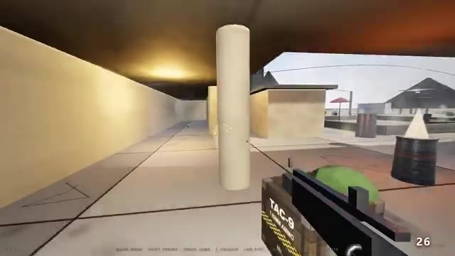
🔍 AgrandirCela a été construit en utilisant DeepSeq V4 Flash 0731 dans Hermes Agent avec un seul prompt. Cela a pris environ 32 minutes à générer et n'a coûté que 7 cents. C'est incroyablement bon marché. Environ 2 dollars peuvent durer toute une journée pour de nombreux projets. Et compte tenu du prix, les graphismes et la qualité générale sont en réalité plutôt bons.
Interface & Outils : Navigateur web affichant une publication sur la plateforme X (Twitter) et lecteur vidéo en plein écran.
Contenu textuel & Code : Texte du tweet : "DeepSeek V4 Flash 0731 in Hermes Agent and one prompt, took 32 minutes and cost 0.07$, this model is so cheap to the point where 2 dollars can last you a full day." Profil d'Elshayib : "A Father | Full-stack dev going into network engineering while contributing to open source and building side projects".
Action / Démonstration : Affichage d'un post Twitter contenant un exemple de projet généré par IA, puis transition vers un zoom sur la vidéo du projet en question.
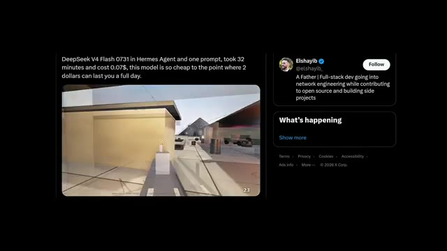
🔍 Agrandir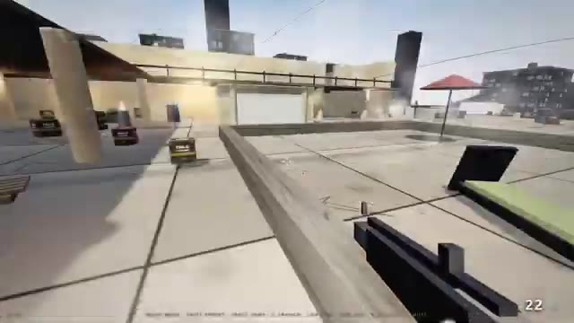
🔍 AgrandirMaintenant, comparons DeepSeq V4 Flash à GPT 5.6 Luna dans le test Minecraft. Pour être juste, aucun des deux modèles n'a réussi à construire un clone convaincant de Minecraft, mais les deux ont tout de même produit des résultats exploitables. La plus grande différence réside dans le temps, le coût et la qualité. GPT-5.6 Luna a complété tous les tests en environ 3 minutes et a coûté environ 75 cents.
Interface & Outils : Interface de test comparative avec affichage côte à côte de deux environnements de type Minecraft (V4 Flash à gauche, 5.6 Luna à droite), puis capture d'un post Twitter (X).
Contenu textuel & Code : Texte affiché : "V4 FLASH", "5.6 Luna", et le tweet de JAZII (@notjazii) indiquant : "both models failed on making a good minecraft clone / but not bad / here's the pricing of all three test: / > luna took around 3 mins for all test which costed around .75$ / > v4 flash took over 5 mins... and costed 1.3$".
Action / Démonstration : Comparaison visuelle des performances des deux IA à l'écran, suivie de la lecture d'un tweet récapitulatif des coûts et du temps de traitement.
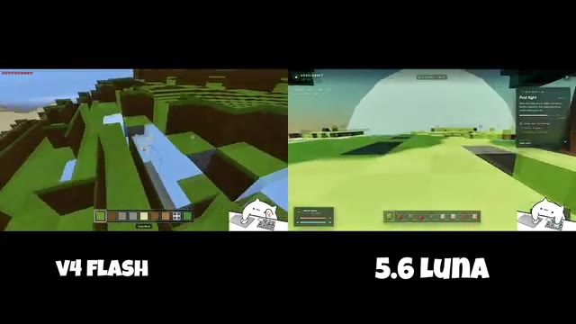
🔍 Agrandir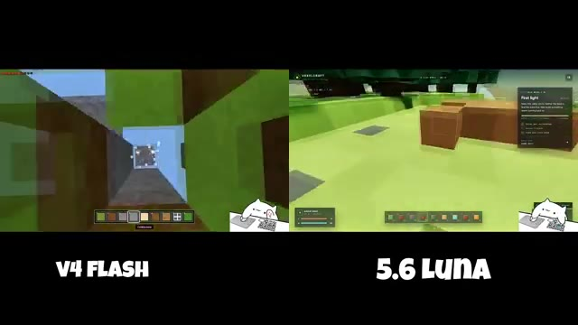
🔍 Agrandir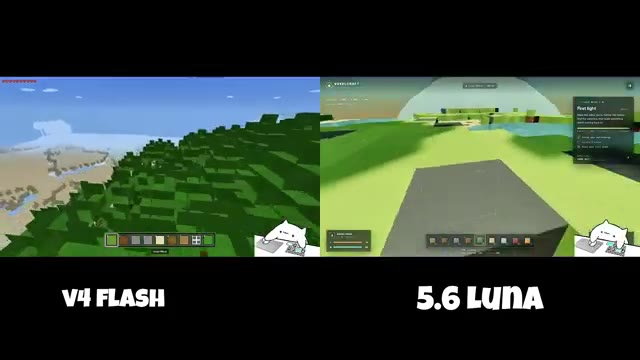
🔍 Agrandir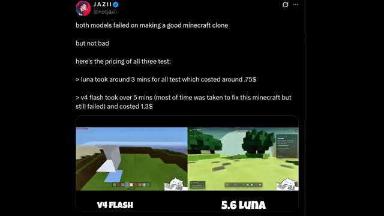
🔍 AgrandirDeep Seek V4 Flash a pris plus de 5 minutes, essayant principalement de corriger la génération de Minecraft, et a fini par coûter environ 1,30 $. Bien que les deux aient échoué, GPT-5.6 Luna a offert une qualité globale nettement supérieure dans ce test. Passant au test de front-end, les deux modèles ont livré des résultats impressionnants mais avec des approches créatives très différentes.
Interface & Outils : Capture d'un post Twitter intégrée affichant des comparatifs vidéo côte à côte de jeux et de sites web générés par IA.
Contenu textuel & Code : Texte du tweet : "both models failed on making a good minecraft clone... > luna took around 3 mins for all test which costed around .75$ > v4 flash took over 5 mins... and costed 1.3$". Étiquettes "V4 FLASH" et "5.6 LUNA".
Action / Démonstration : Présentation comparative des résultats, du temps de calcul et des coûts des deux modèles d'IA sur des tâches de génération de jeux vidéo et d'interfaces web.
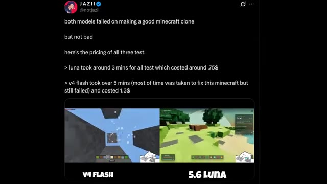
🔍 Agrandir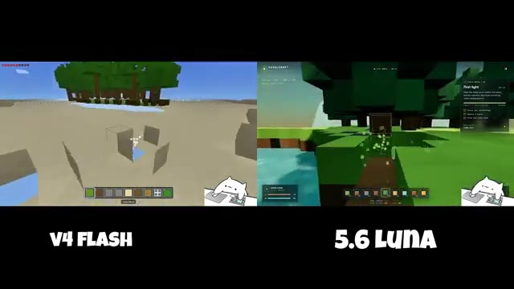
🔍 Agrandir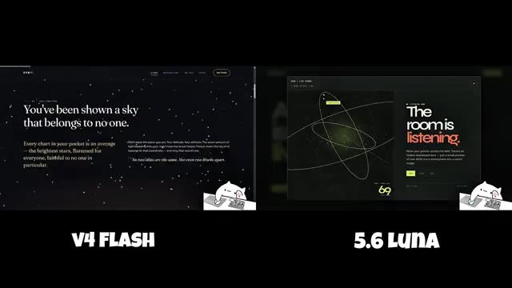
🔍 AgrandirDeepSeq V4 Flash a construit Orbit, un site web sombre et étoilé avec des textes poétiques, des visuels inspirés de constellations et une atmosphère cinématique. D'un autre côté, GPT-5.6 Luna a créé Era, une expérience interactive aux tons verts où la pièce réagit à la lumière, à l'air et au son.
Interface & Outils : Présentation comparative divisée en deux colonnes (V4 Flash à gauche, 5.6 Luna à droite) affichant des captures d'écran de sites web générés par IA.
Contenu textuel & Code : À gauche (V4 Flash / Orbit) : fond étoilé sombre, graphiques de constellations, texte "Find your patch of dark.". À droite (5.6 Luna / Era) : fond vert vif, interface interactive, formulaires et textes descriptifs.
Action / Démonstration : Affichage comparatif côte à côte de deux interfaces web créées par différentes IA, illustrant leurs styles visuels distincts.
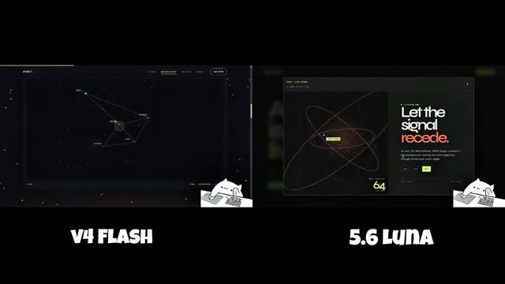
🔍 Agrandir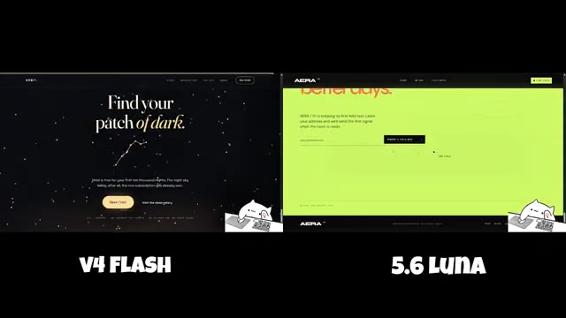
🔍 AgrandirLes deux sites web sont entièrement responsifs, dotés d'animations fluides et possèdent une forte hiérarchie visuelle sans ressembler à des modèles SaaS génériques. Dans cette comparaison, tout est une question de créativité et de préférence personnelle, plutôt que de capacité. Maintenant, comparons DeepSeq V4 Flash avec Kimi K3.
Interface & Outils : Navigateurs web affichant des interfaces de sites web comparatifs (V4 Flash, 5.6 Luna, DeepSeek V4 Flash, Kimi K3).
Contenu textuel & Code : Textes visibles : "Step into a darker sky.", "AERA", "V4 FLASH", "5.6 LUNA", "ARC 01", "DeepSeek V4 Flash", "KIMI K3", "$10,000".
Action / Démonstration : Présentation comparative de designs de sites web et d'interfaces utilisateur générés par différents modèles d'IA.
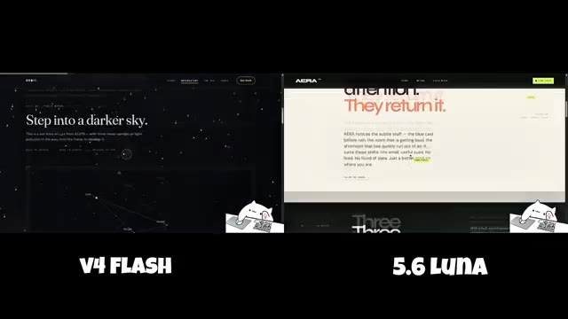
🔍 Agrandir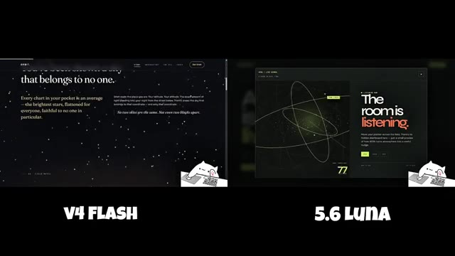
🔍 Agrandir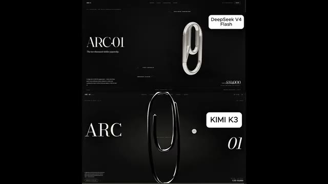
🔍 AgrandirLes deux modèles ont reçu exactement le même prompt pour créer une page de destination de produit de luxe pour un produit conceptuel fictif à 10 000 $ appelé Arc01. Kimi K3 prend clairement la tête en termes de finition. Il a une meilleure typographie, une utilisation plus forte de l'espace négatif, et la présentation du produit phare a l'air plus raffinée.
Interface & Outils : Écran partagé comparant deux interfaces de pages web générées par IA (DeepSeek V4 Flash en haut, Kimi K3 en bas).
Contenu textuel & Code : Textes visibles : "ARC 01", "The ten-thousand-dollar paperclip.", "DeepSeek V4 Flash", "KIMI K3", ainsi que diverses sections techniques de présentation du produit conceptuel.
Action / Démonstration : Comparaison visuelle côte à côte de deux designs de pages web de produits de luxe générés par deux modèles d'IA différents.
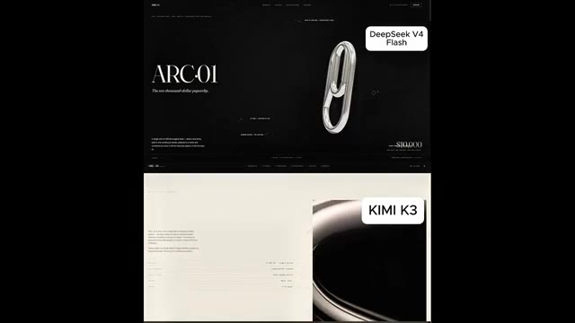
🔍 Agrandir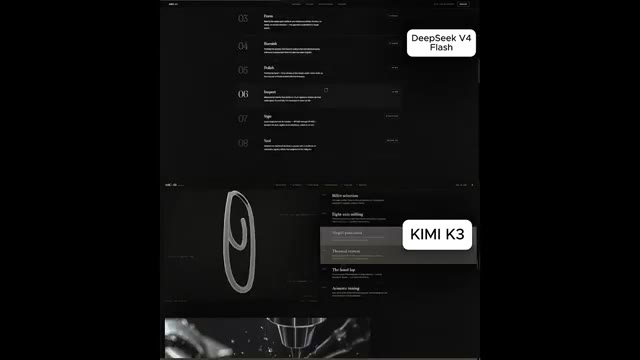
🔍 AgrandirMais DeepSeq V4 Flash s'en approche étonnamment. La mise en page, le texte et la structure générale sont tous solides. Il est principalement en retard sur le dernier niveau de raffinement visuel, pas sur les fondamentaux. Ce qui est vraiment impressionnant, c'est que Kimi K3 est environ 10 fois plus grand, pourtant DeepSeek V4 Flash atteint environ 90 % de la qualité tout en coûtant moins de 10 cents pour 6 itérations de construction et 8 passes de contrôle qualité.
Interface & Outils : Capture d'écran de pages web comparatives et interface de réseau social X (Twitter).
Contenu textuel & Code : Textes comparatifs montrant "DeepSeek V4 Flash" et "KIMI K3", ainsi qu'un tweet de @filiroval parlant de modèles 10x plus petits atteignant 90% du résultat pour moins de 0.10$.
Action / Démonstration : Présentation comparative côte à côte de deux interfaces générées par les modèles DeepSeek V4 Flash et Kimi K3.
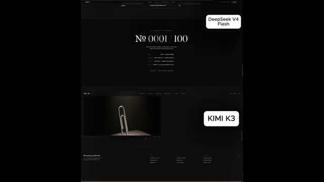
🔍 Agrandir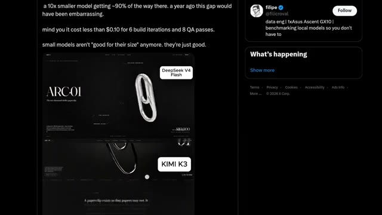
🔍 AgrandirCela montre à quel point les petits modèles sont devenus performants. Ils ne sont plus seulement bons pour leur taille, ils sont réellement bons. Enfin, jetons un œil à DeepSeek V4 Pro. Les premiers résultats proviennent du modèle utilisant exactement le même prompt qui a été précédemment utilisé pour tester Kimi K3 et GPT 5.6.
Interface & Outils : Interface de démonstration et de tests comparative de modèles d'IA (DeepSeek V4 Pro, DeepSeek V4 Flash, GPT-5.6 Sol, Kimi K3) affichant des environnements 3D interactifs et des interfaces web de présentation.
Contenu textuel & Code : Textes visibles : « DeepSeek V4 Flash », « KIMI K3 », « Ballista », « GPT-5.6 Sol », « V4 Pro ». Éléments d'interface de jeu ou de simulation 3D incluant des commandes de baliste, des paysages avec chemins, herbe et torches.
Action / Démonstration : Présentation comparative des résultats de différents modèles d'IA (DeepSeek V4 Pro, Flash, GPT-5.6 Sol, Kimi K3) sur un même prompt de simulation 3D interactive de baliste.
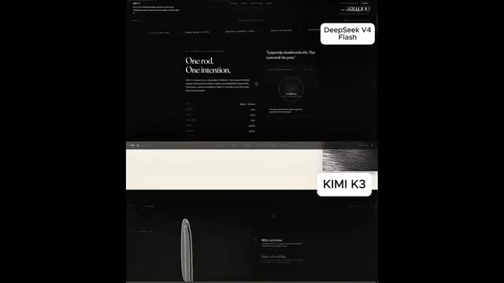
🔍 Agrandir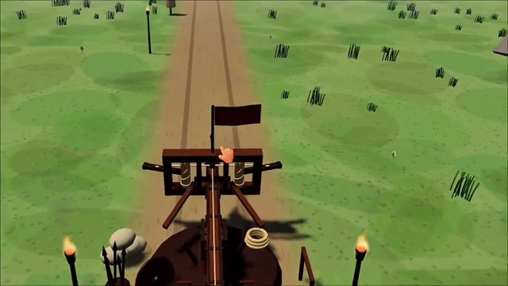
🔍 Agrandir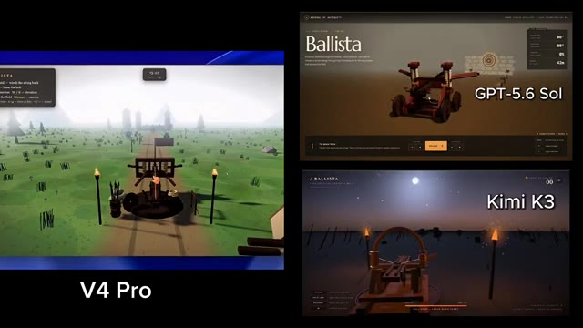
🔍 AgrandirTout de suite, vous pouvez voir le souci du détail amélioré, des tentes et du feu de camp jusqu'à la composition globale de la scène. Si ces premiers résultats sont un indicateur, DeepSeek V4 Pro s'annonce très prometteur. Voici un autre résultat de DeepSeek V4 Pro. En ce moment, il y a beaucoup de discussions autour de l'API.
Interface & Outils : Interface de comparaison comparative de modèles d'IA et environnement de simulation 3D interactive (type jeu vidéo ou banc de test technique).
Contenu textuel & Code : Textes visibles : "V4 Pro", "GPT-5.6 Sol", "Kimi K3", "Ballista", commandes WASD, score et statistiques de tir.
Action / Démonstration : Comparaison visuelle des performances graphiques et physiques de différents modèles d'IA (DeepSeek V4 Pro, GPT-5.6 Sol, Kimi K3) sur une simulation de baliste et de stand de tir.
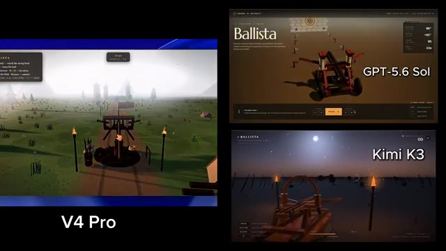
🔍 Agrandir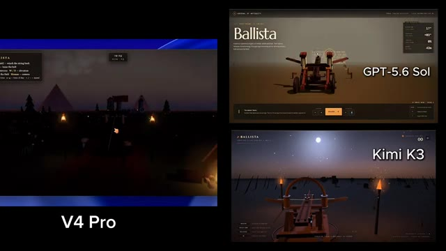
🔍 Agrandir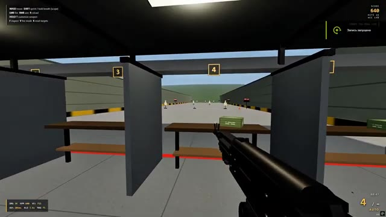
🔍 AgrandirPlusieurs personnes sur X ont suggéré que cela pourrait être acheminé vers Fable 5, ce qui pourrait expliquer le bond des performances. Si c'est vrai, les améliorations ont du sens. Mais si ce n'est pas acheminé vers Fable 5, alors DeepSeek a peut-être construit un modèle encore plus puissant que Kimi K3. Quoi qu'il en soit, cela vaut la peine de garder un œil dessus jusqu'à ce que DeepSeek partage officiellement plus de détails.
Interface & Outils : Jeu vidéo de type FPS / simulateur de tir avec un menu de configuration d'armes interactif (Gunsmith).
Contenu textuel & Code : Menus de configuration d'armes (Barrel, Muzzle, Optic, Stock, Underbarrel, Magazine, Finish), statistiques de l'arme (Damage, Fire Rate, Control, Accuracy, Handling, Mobility, Reload, Magazine), score en haut à droite (665, 790), indications de touches en haut à gauche (WASD, SHIFT, LMB, RMB, R, HOLD T, F).
Action / Démonstration : Le joueur se trouve dans un stand de tir, navigue dans le menu de personnalisation de l'AK-47 pour modifier les accessoires de l'arme et vise les cibles.
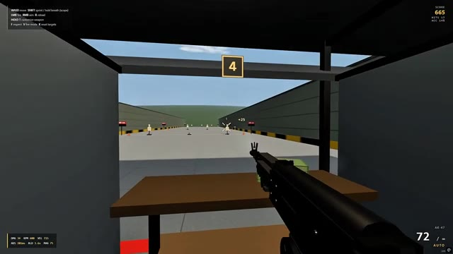
🔍 Agrandir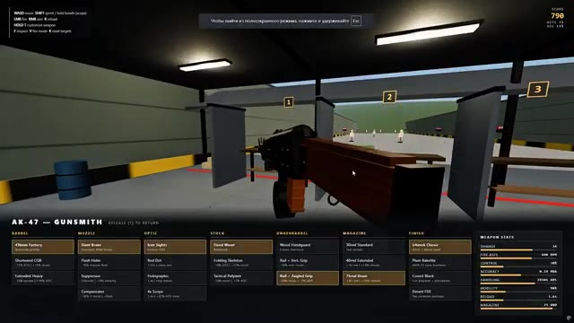
🔍 Agrandir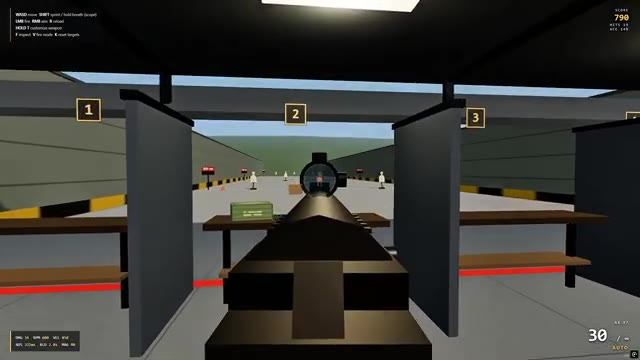
🔍 AgrandirC'est tout pour le rapport de recherche d'aujourd'hui. Si vous avez apprécié cette analyse détaillée et que vous souhaitez garder une longueur d'avance sur les derniers modèles, outils et avancées en matière d'IA, assurez-vous de vous abonner à Pursuing AI. Merci d'avoir regardé, et je vous dis à la prochaine.
Interface & Outils : Interface de jeu vidéo de tir avec affichage des scores et des commandes en haut à gauche.
Contenu textuel & Code : Texte des commandes (WASD move, SHIFT sprint / hold breath, etc.), score de 1205 en haut à droite, munitions et statistiques de l'arme en bas à gauche et en bas à droite.
Action / Démonstration : Visualisation d'une session de jeu ou d'un test de simulation de tir avec une arme de type fusil d'assaut (AK-47).
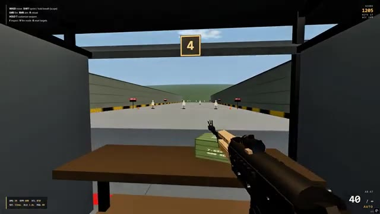
🔍 Agrandir